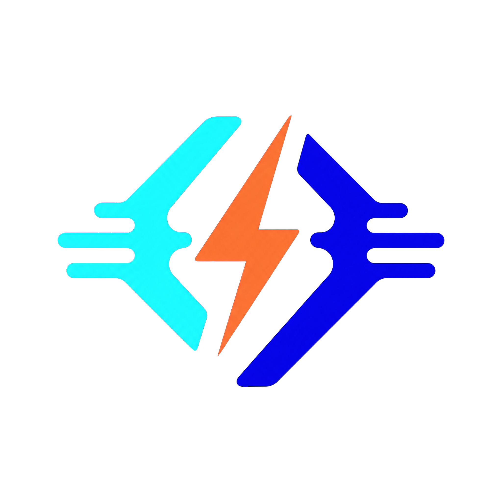

Colecciones que sí entiendes
Importa Postman, conserva carpetas anidadas y navega tus endpoints sin perder el contexto.
Quetzalcoatl/Auth/Refresh token

POS Estudio Probar la betaAPI workbench móvil
POS Estudio reúne requests, colecciones, entornos y respuestas en una experiencia rápida para Android e iOS. Menos pestañas. Más claridad.
Hecho para el trabajo real
Desde la primera llamada hasta el diagnóstico de una respuesta complicada, todo vive en un mismo flujo.
Importa Postman, conserva carpetas anidadas y navega tus endpoints sin perder el contexto.
JSON, XML, HTML, YAML, Markdown, Base64 y vista hexadecimal con búsqueda y árbol.
Pre-request y post-response para variables, tokens, tests, UUIDs y datos del dispositivo.
GraphQL, SOAP, WebSocket y SSE con la misma claridad de edición y observabilidad.
Seguridad por diseño
POS Estudio mantiene los secretos en almacenamiento seguro del dispositivo y redacta credenciales antes de persistir o sincronizar metadatos.
Conocer el enfoqueTokens, certificados y llaves fuera del snapshot normal.
SHA-256/SPKI para los endpoints que lo necesitan.
Un sandbox pensado para automatizar, no para escapar.
Empieza sin fricción
La experiencia local es el punto de partida. Las capacidades de equipo y nube llegarán con planes claros.
Para explorar, aprender y resolver requests desde tu dispositivo.
Para equipos que necesitan continuidad, colaboración y automatización.
Acceso anticipado
La beta está tomando forma. Aquí habilitaremos el acceso anticipado cuando abramos el registro.